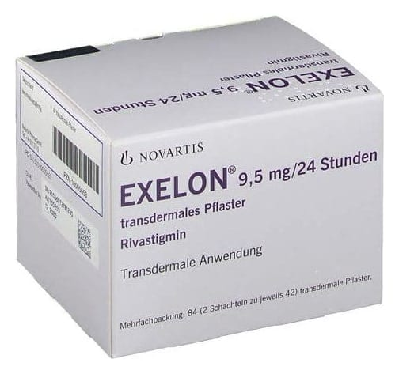

Exelon Patch 9,5 mg/24 Saat Transdermal Flaster, 30 Adet

Ne için kullanılır
KT · Bölüm 1EXELON PATCH 9,5 mg/24 saat transdermal flasterin etkin maddesi rivastigmindir. Her bir 10 cm
ciltten geçişli bant 18 mg rivastigmin içerir. Salıverilme hızı 9,5 mg/24saat’tir. Her bir bant, üç tabakadan oluşan ince, iç içe yapıda ciltten salıveren bir banttır. EXELON, kolinesteraz inhibitörleri isimli bir madde sınıfına aittir. Alzheimer hastalığı veya Parkinson hastalığı bulunan hastalardaki hafif ve orta şiddetteki bellek bozukluklarının tedavisi için kullanılır. Alzheimer olan hastalarda, beyinde belli sinir hücreleri ölerek, sinir hücrelerinin birbiri ile iletişim kurmasını sağlayan asetilkolin adlı maddenin düzeylerinin düşmesi ile sonuçlanır. Rivastigmin
asetilkolini parçalayan asetilkolinesteraz ve bütiriloklinestereaz adlı enzimleri durdurarak iş görür. Bu enzimleri bloke eden EXELON PATCH, beyindeki asetilkolin düzeylerinin artmasını sağlar ve böylece Alzheimer hastalığının bulgularını azaltmaya yardımcı olur.